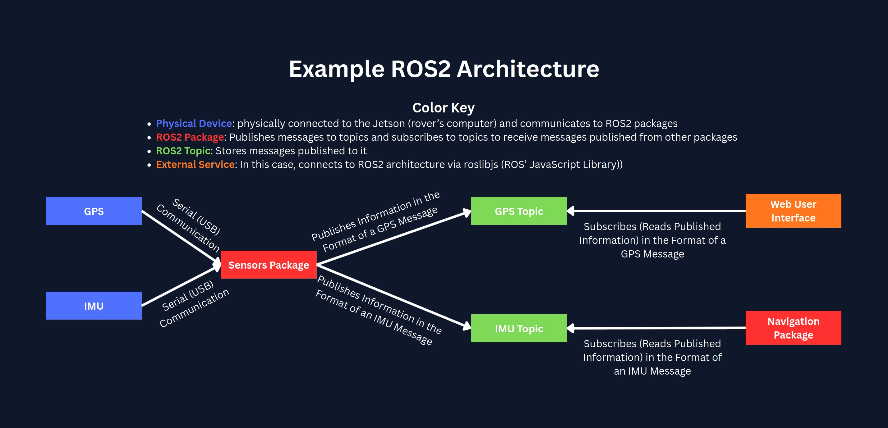

Attention: This site is under active development. Certain features may not be complete but most functionality is present. Other than the below known bugs/todos, please report any issues in the Terraformers Software channel.
Known Bugs/To-Dos
- Missing onboarding assignment for Embedded
- Missing onboarding assignment for Computer Vision
- Incomplete onboarding assignment for Sensors & Navigation
- Incomplete question 6 on Placement Survey
ROS2 Jazzy is a version of ROS (Robot Operating System). Despite its name, ROS is NOT an operating system. It is an open-source suite of software framemworks developed by the Open Source Robotics Foundation (OSRF) for robot software development.
Our main use of ROS2 is to split different aspects of our robot's code into unique packages that can communicate to each other (through publishing messages to and subscribing to topics).

Recommended Tutorials
The best way to learn ROS2 is to run through the following official ROS2 Jazzy tutorials in order.
- Configuring ROS2 Environment
- Introducing Turtlesim
- Understanding ROS2 Nodes
- Understanding ROS2 Topics
- Understanding ROS2 Services
- Launching Multiple Nodes
- Creating a Workspace
- Creating Your First ROS2 Package
- Writing a Simple Publisher and Subscriber (C++)
- Writing a Simple Service and Client (C++)
- Creating Custom Msg and Srv Files